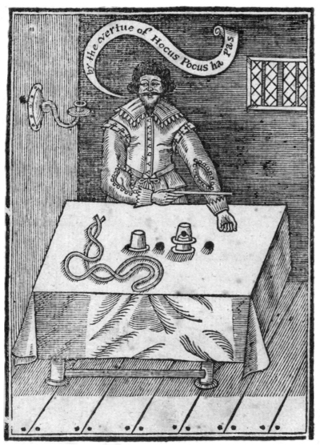
O,
El Arte del Escamoteo expuesto en sus verdaderos colores,
plenamente, claramente y con exactitud, de manera que una persona ignorante pueda por él
aprender la plena perfección del mismo, tras un poco de práctica.
A cada truco se añade la figura, donde fuere menester
para la instrucción.
La segunda edición, con muchas adiciones.
Prestat nihili quam nihil facere.
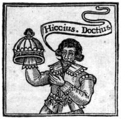
LONDRES,
Impreso por T. H. para R. M. 1635.
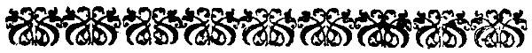
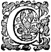
Cortés lector, ¿no os maravilláis? Si no os maravilláis, bien podéis hacerlo, al ver un panfleto tan leve agotado tan presto; pero ligero viene y ligero va; es término de escamoteador, y bien cuadra al sujeto. ¿Queréis saber de dónde vino primero? Pues de la feria de Bartolomé: ¿adónde va? De nuevo a la feria; es un vagabundo, y como dije, ligero viene y ligero va; pues pretende visitar no sólo la feria de Bartolomé, sino todas las ferias del reino también, y por eso en la portada Hiccius Doccius es el maestro de postas, y lo que allí le falta, aquí se lo daré, una palabra o dos de mando, un término de arte, no tanto sustancial como circunstancial, Celeriter, vade, sobre vallados y fosos, a través de lo espeso y lo delgado, para llegar a vuestras ferias. Roma para un escamoteador: todo en posta, mas con deseo de daros plena satisfacción. Si os place, compradlo y leedlo; si no, dejadlo para quien gustare.Adiós.
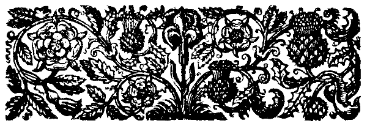
Esto llegó primero al reino por ciertos egipcios que fueron traídos destas tierras, los cuales, creciendo en gran número, se dispersaron por la mayor parte del reino: siendo muy expertos en este arte y en la quiromancia, engañaban al pueblo en todas partes dondequiera que iban. Después, diversos vagabundos oriundos de nuestras tierras, uniéndose con ellos, aprendieron con el tiempo tanto su lengua como sus engaños, por lo cual al cabo fueron descubiertos, y en el parlamento siguiente se promulgó una ley: que quien transportase un egipcio pagase multa; además, que quien tomase nombre de egipcio se le imputase como felonía en tan alto grado que no pudiese acogerse al beneficio del clero, la cual ley se puso en ejecución, y desde entonces nuestro reino ha quedado bien libre de aquellos escamoteadores egipcios.
La ligereza de manos es una operación por la cual uno puede parecer obrar cosas maravillosas, imposibles e increíbles mediante agilidad, presteza y sutileza de mano. Las partes de este arte son principalmente dos. La primera es el escamoteo de bolas, cartas, dados, dinero, etc. La segunda es la confederación.
El fin de este arte es bueno o malo según el uso: bueno y lícito cuando se emplea en fiestas y alegres reuniones para provocar risa, especialmente si se hace sin deseo de estimación mayor de la que merecemos. Malo y del todo ilícito cuando se usa con propósito de engañar o por vanagloria para ser estimado más de lo honesto.
Primero, debe ser de espíritu audaz e impudente, para poner buena cara al asunto.
Segundo, debe tener escamoteo ágil y limpio.
Tercero, debe usar términos extraños y palabras enfáticas para adornar sus acciones y más asombrar a los miradores.
Cuarto y último, tales gestos del cuerpo que distraigan los ojos de los espectadores de una estricta observación de su modo de escamotear.
El operador así calificado debe tener implementos hechos a propósito: primero, tres cubiletes de latón o de plata de Crooked Lane:
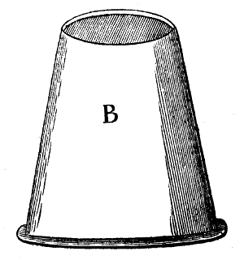
Estos cubiletes han de ser todos de un tamaño, y el fondo de cada uno algo hundido dentro del cubilete; mirad la figura siguiente, pues los representa fielmente en forma y tamaño: está señalada con la letra B. También debe tener cuatro bolas de corcho del tamaño de pequeñas nueces moscadas. Primero debe practicar para sostener dos o tres de estas bolas a la vez en una mano. El mejor lugar para una sola bola es entre la yema del pulgar y la palma de la mano; pero si sostiene más de una, entre los dedos hacia la base. El lugar para una bola grande es entre los dos dedos medios. Recordad siempre mantener la palma de la mano hacia abajo: una vez aprendido a sostener estas bolas con gracia, podréis ejecutar diversas hazañas extrañas y deleitosas.
Mas ya sea que parezcáis echar la bola al aire, a la boca o a la otra mano, retenedla siempre en la misma mano, recordando mantener la palma hacia abajo y fuera de vista. Ahora a comenzar:
El que ha de ejecutar debe sentarse al lado más alejado de una mesa cubierta con tapete: en parte para que las bolas no rueden, en parte para que no suenen: también debe tener el sombrero en el regazo o sentarse de modo que pueda recibir algo en él, y haga que todos los espectadores se sienten. Saque entonces las cuatro bolas y ponga tres sobre la mesa (reteniendo la cuarta en la derecha) y diga: Señores, aquí hay tres bolas que veis, 1. Meredin, 2. Benedic y 3. Presto John; luego saque los cubiletes y téngalos todos tres en la derecha también, diciendo: Aquí hay también tres cubiletes, ved que no hay nada en ellos ni tienen fondos falsos:
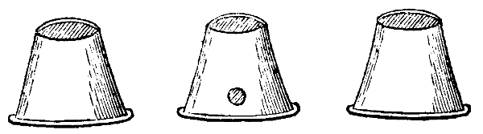
Luego diga: Ved, los pondré en fila, y al colocarlos, escamotee la bola retenida bajo el cubilete del medio, diciendo al ponerlos: Nada aquí, ni aquí, ni aquí. Mostrad luego las manos y decid: Señores, veis que no hay nada en mis manos, y decid: Ahora a comenzar, y tomad con la derecha una de las tres bolas puestas en la mesa y decid: ésta es la primera, y pareced ponerla en la izquierda, mas retenedla, cerrando presto la izquierda y aplicándola al oído, diciendo: Esto es para purgar el cerebro, Presto vete; luego moved los dos cubiletes extremos (señalados A y B) con ambas manos, diciendo: Y nada aquí ni aquí, y al colocarlos escamotead la bola de la derecha bajo el B.
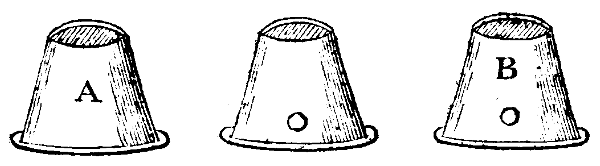
Luego con la derecha tomad la segunda bola y pareced ponerla en la izquierda (mas retenedla), cerrando la izquierda a su tiempo: luego aplicad la izquierda a la boca, pareciendo sorber la bola de la mano, y haced un gesto como si la tragaseis, luego decid: Presto, y ya se fue, y con la derecha moved el cubilete A, diciendo: Y nada aquí, y al colocarlo escamotead la bola retenida bajo él; así habréis puesto una bola en cada cubilete.
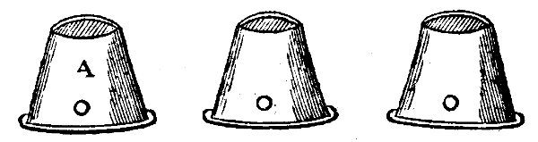
Luego con la derecha tomad la tercera bola y pareced ponerla en la izquierda, cerrándola a su tiempo, y luego extendedla diciendo: vade, couragious, y abrid la mano y soplad un soplo, mirando arriba como si la vierais volar, y decid: passa couragious, y ya se fue: luego levantad los cubiletes uno tras otro y decid: no obstante, señores, aquí hay una, aquí dos y aquí las tres de nuevo: luego cubridlos y decid: ved, señores, los cubriré todos otra vez. Luego decid: ahora la primera, luego con la derecha levantad el primer cubilete y con la izquierda tomad la bola que está debajo, diciendo: ved, la saco, y al volver a poner el cubilete escamotead la bola de la derecha bajo él, luego con la derecha tomad la bola de la izquierda, pareced meterla en el bolsillo (mas retenedla) diciendo: vade, ya se fue al bolsillo; luego con la derecha levantad el segundo cubilete y con la izquierda tomad la bola de debajo y decid: ved, también saco ésta limpiamente, y al poner el cubilete escamotead la retenida bajo él, y luego con la derecha tomad la bola de la izquierda y pareced meterla en el bolsillo (mas retenedla) diciendo: Iubeo, y ya se fue al bolsillo: luego con la derecha levantad el tercero y último cubilete y con la izquierda tomad la bola de debajo y decid: aquí saco la última, y al poner el cubilete escamotead la bola de la derecha bajo él, y luego con la derecha tomad la bola de la izquierda y pareced meterla en el bolsillo (mas retenedla) y decid: vade, ya se fue al bolsillo;
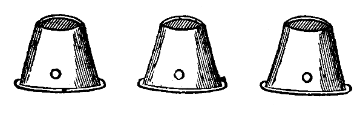
luego levantad los cubiletes por orden, diciendo: Señores, aquí hay una que veis, aquí dos y aquí las tres de nuevo; y al poner el último cubilete señalado A escamotead la bola retenida en la mano bajo él.
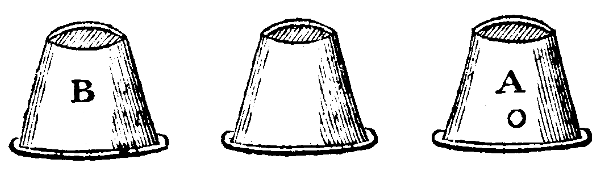
Luego tomad una de las tres bolas con la derecha y pareced ponerla bajo el cubilete B, mas retenedla, y luego decid: por el polvo de experiencia, Iubeo, ven cuando te llame bajo este cubilete A, luego levantad B y decid: ved, señores, desdeña quedarse bajo este cubilete, sino que se ha metido aquí: luego tomad el cubilete A y se maravillarán cómo llegó allí. Luego decid: Señores, y veis que aquí hay sólo una, y al ponerlo escamotead la de la derecha bajo él, luego con la derecha tomad la segunda bola y pareced ponerla en la izquierda, cerrando la izquierda a su tiempo:
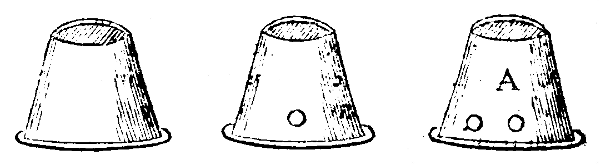
luego extended la dicha izquierda y pronunciad estas palabras con un Revoca stivoca (abrid la mano agitándola arriba) ya se fue, luego levantad el cubilete A y decid: ved, aquí están las dos juntas; luego decid: aquí hay sólo dos, y al ponerlo escamotead la bola retenida en la derecha bajo él.
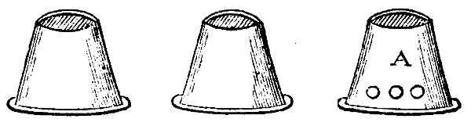
Luego con la derecha tomad la tercera bola y pareced ponerla en la izquierda, y cerrándola a su tiempo, diciendo: ésta es mi última bola, vade passa couragious, (abrid entonces la mano, agitándola arriba y mirando tras ella) y ya se fue, luego levantad el cubilete A y decid: aquí están las tres de nuevo.
Poned luego los cubiletes en fila otra vez, y bajo uno de ellos, como D, escamotead la cuarta bola que reteníais en la mano, y dejad las otras tres bolas aparte.
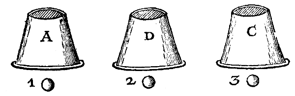
Luego con la derecha tomad la primera bola y pareced ponerla en la izquierda, cerrando la dicha izquierda a su tiempo, luego como si jugaseis a los dados, arrojad la izquierda hacia el cubilete D y soplad tras ella, diciendo: vade pas, y ya se fue, luego tomad el cubilete A y colocadlo sobre el D, y al colocarlo escamotead la bola retenida en la derecha sobre la boca del cubilete D.
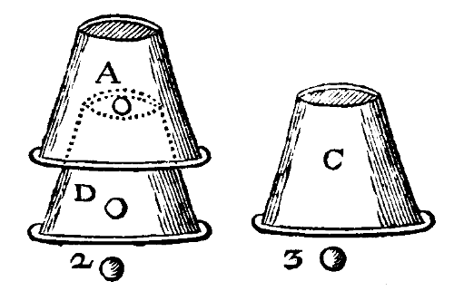
Luego tomad la segunda bola con la derecha y pareced ponerla en la izquierda, cerrándola a su tiempo, y como antes: ahora de igual modo pareced hacerla desaparecer con una palabra de mando, luego tomad el cubilete C y colocadlo sobre el A, y al colocarlo escamotead la bola retenida en la derecha sobre la boca del cubilete A,
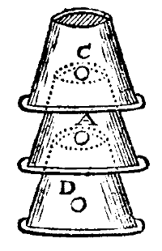
Así habréis puesto una bola bajo cada cubilete, luego tomad la tercera bola, pareciendo hacerla desaparecer como las dos anteriores, mas retenedla, luego mostrad bajo cada cubilete una, lo cual será muy extraño.
Luego tomad un cubilete en la derecha y colocadlo sobre otro, diciendo: ved, señores, pondré un cubilete sobre otro, y al colocarlo escamotead la bola retenida en la derecha sobre la boca del cubilete inferior: mirad la figura siguiente.
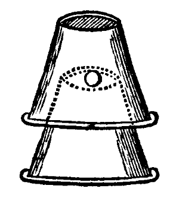
Luego tomad una bola y pareced arrojarla al aire, y mirando tras ella decid: vade, ya se fue, luego con la derecha levantad el cubilete superior, decid: ved, aquí se ha metido entre mis cubiletes, y al volver a ponerlo escamotead la bola retenida bajo él.
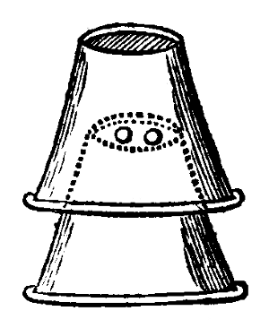
Luego con la derecha tomad la segunda bola y pareced ponerla en la izquierda, cerrándola a su tiempo: luego abrid la izquierda, agitándola, decid: vade, y ya se fue, luego con la derecha levantad el cubilete superior y decid: ¿veis, señores, están acurrucados como mozo y moza en la cama?, y al ponerlo escamotead la bola retenida.
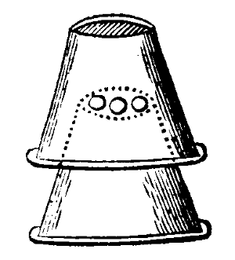
Luego con la derecha tomad la tercera bola y pareced ponerla en la izquierda, mas retenedla, cerrando la izquierda a su tiempo: luego extendedla y abrid la mano, agitándola arriba y boquiabierto tras ella, decid: Mountifilede, sube, ya se fue, y luego levantad el cubilete y decid: aquí están las tres de nuevo. Luego cubridlos otra vez y decid: solo es nada, luego colocad el tercer cubilete sobre ellos, diciendo: pero doble es algo.
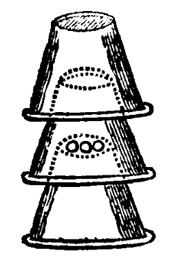
Luego podéis parecer sacar los tres corchos de la boca del cubilete superior, haciéndolos desaparecer uno tras otro, como os he enseñado antes suficientemente, lo cual puede hacerse con esa única bola que retenéis en la derecha.
Y por último, tomad el cubilete superior y ponedlo aparte primero, luego con ambas manos levantad ágilmente los otros dos cubiletes, alternándolos uno sobre otro, y las bolas no caerán, y así se pensará que habéis sacado las tres bolas por los fondos de los dos cubiletes superiores. Podría enseñaros a variar estas hazañas de cien maneras, pero lo dejo a quienes pretendan seguir el oficio.
Poned uno de vuestros cubiletes sobre una mesa y sacad de vuestro bolsillo una buena bola grande de taburete y decid, golpeando la mano con la bola debajo de la mesa: Señores, ¿no os parecería lindo truco que hiciese pasar esta bola a través de la mesa hasta el cubilete?
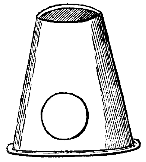
Luego alguno levantará el cubilete para ver si es así; entonces, sosteniendo la bola entre los dos dedos medios de la derecha, miradle a la cara y decid: no, pero no debéis mover mi cubilete de su lugar mientras digo mis palabras de mando: con eso poned el cubilete en su lugar anterior y al ponerlo ágilmente escamotead la bola bajo él y decid: Hei Fortuna nunquam credo, vade couragious: Ahora ved (decid) si está allí o no, lo cual al verlo imaginarán que fue conjurada allí por virtud de vuestras palabras.
Retened una bolita en la mano y poned tres bolitas más sobre la mesa: luego con la derecha tomad una de las tres y ponedla en la izquierda, diciendo: Aquí va una, luego tomad la segunda y ponedla también en la izquierda y con ella la bola retenida en la derecha, diciendo: Y aquí van dos (aunque ya sabéis que hay tres) y cerrad la mano a su tiempo: luego tomad la tercera bola en la derecha y aplicad la derecha a la parte superior del brazo izquierdo, reteniendo la bola firmemente pronunciad estas palabras: Iubeo celeriter, venid todas a mi mano cuando os llame. Luego retirad la derecha (manteniendo la palma hacia abajo) diciendo: Ya se fue, señores: luego abrid la izquierda y decid: Aquí están las tres juntas, y ponedlas sobre la mesa.
Tomad una de las bolas en la derecha y ponedla en la izquierda, sosteniéndola firmemente entre el índice y el pulgar de la dicha izquierda. Luego con el índice y pulgar de la derecha (mas sed ágil) pareced sacar una bola de otra, lo cual podéis hacer deslizando la bola retenida en la derecha entre el índice y pulgar de dicha mano, diciendo: Así por agilidad he aprendido a hacer, de una bolita pequeña sacar dos: y todas del mismo tamaño, luego poned las cuatro bolas sobre la mesa.
Tomad una de las bolas con la derecha y pareced ponerla en la izquierda, mas retenedla, cerrando la izquierda a su tiempo, y decid: Aquí va una: luego extended la mano. Luego con la derecha tomad otra, diciendo: Aquí tomo otra. Luego pronunciad estas palabras: Mercus mercurius por el polvo de experiencia, Iubeo; luego abrid la izquierda diciendo: Ya se fue, y luego abrid la derecha y mostradlas ambas juntas.
Debéis tener una piedra de tamaño razonable, tal que podáis ocultarla bien en la mano, sentándoos como dije antes, de modo que podáis recibir algo en el regazo, sacad esta piedra del bolsillo diciendo: Veis, señores, aquí una piedra, piedra milagrosa: ¿queréis que desaparezca, vade, o que se vaya invisible?; dicho esto, retirad la mano al lado de la mesa dejando caer la piedra en el regazo, en cuyo tiempo mirad alrededor diciendo: elegid vosotros. Luego extended la mano y decid: Fortuna variabilis, lapis inestimabilis Iubeo, vade, vade, couragius. Abrid entonces la mano agitándola arriba y soplad un soplo y mirad arriba diciendo: ¿veis que se fue? Vuestro mirar arriba hará que ellos miren arriba, en cuyo tiempo podéis tomar la piedra de nuevo con la otra mano y meterla en el bolsillo.
Sacad de nuevo la piedra del bolsillo diciendo: aquí está otra vez, y la daré a cualquiera de vosotros para que la sostenga, y extended la mano hacia ellos y abriéndola decid: He aquí que está. Luego cuando alguno esté por tomarla, retirad la mano al lado de la mesa y haced el escamoteo como antes, en cuyo tiempo decid: Pero debéis prometerme tomarla presto:
Luego dirá él: Lo haré, luego extended la mano cerrada hacia él de nuevo, y mientras él forcejee pensando tomarla presto, retened firme y decid: Vade couragious, celeriter vade: en cuyo tiempo podéis tomar la piedra con la otra mano y extenderla. Luego abrid la mano y decid: mira, si no podéis sostener mejor a una linda moza cuando la tenéis, no daré un ardite por vuestra habilidad.
Tomad la carta que queráis, quitadle el papel impreso y enrolladla fuerte, y haced un agujero en una nuez y sacad el fruto, luego meted la carta enrollada, después tapad el agujero de la nuez con cera con limpieza; esta nuez debéis tenerla preparada, y cuando estéis ejecutando, pedid tal carta como la que encerrasteis en la nuez, o tened una preparada y decid: Veis, señores, aquí tal carta: luego humedecedla y quitadle el lado impreso, enrolladla y escamoteadla de la manera usual: luego sacad la nuez del bolsillo y dadla a uno diciendo: Romped esa nuez y decidme si halláis la carta allí, lo cual al hallarla se tendrá por muy extraño.
Luego tened otra nuez semejante, mas llena de tinta y tapada del mismo modo, y dadla a otro y mandadle romperla y ver qué halla en ella, y luego que la rompa toda la tinta le correrá por la boca, lo cual moverá más risa que el anterior.
Pedid a alguno de los espectadores que os preste un cuchillo, el cual cuando tengáis, sostenedlo de modo que podáis cubrir todo el cuchillo con ambas manos, salvo el extremo del mango, y poned la punta en el ojo y decid: que alguno lo clave con el puño, mas nadie lo hará por ser cosa peligrosa: luego poned las manos sobre el borde de la mesa y mirando alrededor decid: ¿pues qué, nadie lo clavará?, en cuyo tiempo dejad caer el cuchillo en el regazo. Luego ágilmente haced como si lo metieseis de golpe en la boca, o sostenedlo en una mano y golpeadlo con la otra (mas ágilmente) luego haced dos o tres gestos agrios diciendo: un poco de bebida, un poco de bebida: o podéis decir: ahora que alguno meta el dedo en mi boca y lo saque de nuevo; alguno dirá quizá que me morderéis, decid: no, os aseguro. Luego cuando meta el dedo en vuestra boca lo sacará y dirá: aquí no hay nada (este tiempo basta para escamotear el cuchillo del regazo al bolsillo) decid de nuevo: pues, ¿ya sacasteis el dedo?, ¿pensabais sacar el cuchillo? Si estuviera en mi boca me mataría. El cuchillo está aquí en mi bolsillo, y con eso sacadlo y devolvedlo.
Tomad una bola y ponedla sobre la mesa y sosteniendo un cuchillo en una mano por la hoja, pedid a alguno que tome la bola de la mesa y la ponga sobre el mango del cuchillo, fingiendo que la soplaréis de allí invisiblemente, y cuando la esté poniendo dadle un buen golpe en los nudillos.
Este pudding debe ser de estaño, consta de doce aros pequeños hechos como cinta, de modo que casi caigan unos dentro de otros, y tenga un trozo de lienzo atado sobre el extremo mayor para que no os lastime los dientes al meterlo presto en la boca. La figura sigue y está marcada con las letras A A.
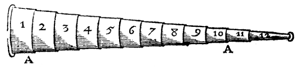
Sostened este pudding (pues así se llama) secretamente en la izquierda con el extremo de lienzo arriba, y con la derecha sacad una bola del bolsillo y decid: Si hay alguna doncella que haya perdido su doncellez o mujer vieja que esté medio desengañada de sí misma porque sus vecinos la tienen por no tan moza como quisiera parecer, venga a mí, pues esta bola es remedio presente; luego pareced poner la bola en la izquierda, mas dejadla caer en el regazo y meted el pudding en la boca, lo cual se pensará ser la bola que les mostrasteis: luego inclinad la cabeza y abrid la boca y el pudding bajará a toda su longitud, lo cual con la derecha podéis golpear hacia arriba en la boca de nuevo: haced esto tres o cuatro veces seguidas, y la última vez podéis vaciar la boca en la mano y meterlo en el regazo sin sospecha, siempre que hagáis dos o tres gestos agrios después, como si se os atascara en la garganta, y si practicáis golpear suavemente con el puño a cada lado de la garganta, el pudding parecerá sonar como si estuviera en ella. Luego decid así: en tierras de Alemania tragan puddings, se les deslizan garganta abajo antes que los dientes puedan tomar posesión de ellos.
Para efectuar esta hazaña debéis tener un cuchillo hecho a propósito, con una muesca en medio de la hoja, como se muestra en la figura siguiente señalada con la letra A.
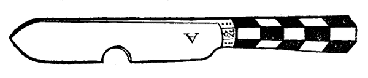
Debéis ocultar la muesca con el dedo y luego pasadlo sobre la parte carnosa de la nariz, y la nariz parecerá como cortada a medias con el cuchillo.
Debéis tener también para efectuar este engaño un instrumento a propósito. La figura sigue. Puede hacerse de dos palos de saúco, sacando la médula y pegándolos después, los extremos deben tener un trozo de corcho ahuecado y pegado sobre ellos: luego debe pasarse un cordel fino por ellos, los extremos deben salir por dos agujeros hechos en el lado exterior de cada palo de saúco.
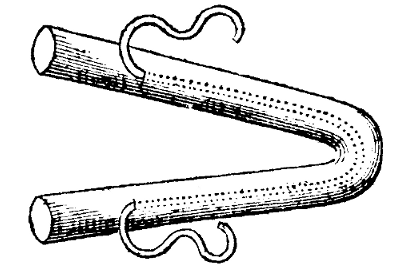
Poned este artificio sobre la parte carnosa de la nariz, luego tirad de un extremo de la cuerda y después del otro, y se pensará que la cuerda pasa del todo por la nariz.
Debéis tener para ejecutar esta hazaña diversas fichas con agujeros recortados en el centro, luego pegad juntas tantas como hagan una caja suficiente para contener un dado: luego pegad una ficha entera sobre ellas, y tened una caja de estaño blanco que las ajuste, mas más honda que el montón pegado de fichas; haced también tapa para esta caja. Primero, meted en la caja tres fichas sueltas, luego el montón pegado con el agujero arriba, luego meted un dado en el agujero y por último tres fichas enteras sueltas más, y tapadla. Sacad esta caja de fichas y decid: Señores, aquí una caja de oro de Berbería, me la dejó en legado un amigo difunto con condición de que la emplease bien y honestamente. Ahora, señores, fue mi suerte al viajar quedar de noche en el campo y buscar posada, y aconteció que entré en una casa de hospedaje donde, llamando a la hospedera, saqué mi caudal y dije: ¿cuánto debo daros, hospedera, por comida, bebida y cama esta noche? Amigo mío, dijo ella, tres escudos franceses; con eso destapé mi caja y la puse sobre la mesa (debe hacerse con la boca de la caja hacia abajo) quité la caja de las fichas y le di tres de arriba diciendo: ahí van; y echando la vista aparte vi una linda moza bajando la escalera; Corazón, le dije, ¿cuánto te daré por yacer contigo esta noche? Ella respondió: señor, por tres escudos franceses podéis: luego adelanté mi caja y le di tres de abajo diciendo: ahí van.
Mas ahora dije a mi hospedera: Hospedera, ¿qué diréis si con un truco que tengo hago que estos seis escudos traigan el resto a través de la mesa? Señor, dijo mi hospedera, tendréis comida, bebida y cama gratis, y dijo la moza: yacerás conmigo gratis. Luego las destapé diciendo: pero primero veamos si están aquí o no, y mostradlas, cubriéndolas de nuevo. Luego (tomando en la mano esas seis fichas, teniendo otras sueltas preparadas en el regazo) golpeé la mano bajo la mesa diciendo: Virtute lapidis, miraculosi lapidis, jubeo vade, celeritate vade. Luego mezclé mis fichas como si cayeran a través de la mesa en mi mano, después las arrojé sobre la mesa diciendo: ahí están las fichas, luego tomé la caja apretando los lados con índice y pulgar (lo cual impedirá que el montón pegado se deslice) y dejé caer el montón pegado en el regazo y dije: no hay nada sino un dado, arrojando la caja vacía hacia ellos: ¿quién tendrá todo ahora, mi hospedera o yo?
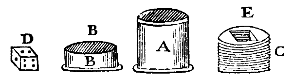
A, la figura de la caja, BB la tapa de la caja, C el montón de fichas pegadas, E el agujero para el dado, D el dado.
Debéis tener dos anillos de latón, plata o lo que queráis, del mismo tamaño, color y semejanza salvo que uno debe tener una muesca cortada como representa la figura siguiente señalada con X
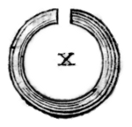
El otro debe ser entero sin muesca; mostrad el anillo entero y ocultad el que tiene muesca y decid: ahora pondré este anillo por mi mejilla, y deslizad secretamente la muesca sobre un lado de la boca y ágilmente escamotead el anillo entero en la manga o ocultadlo en la derecha: luego tomad un palito preparado y pasad el anillo entero sobre él, sosteniendo la mano sobre él hacia la mitad, y mandad a alguno que sostenga fuerte ambos extremos del palo y decid: ved este anillo aquí en mi mejilla, gira, y en verdad parecerá girar si lo frotáis ágilmente con los dedos: y mientras veáis que fijan los ojos intensamente en ese anillo, de repente sacadlo y golpead el palo con él al instante, ocultándolo, y girando el otro anillo que sostenéis con la mano alrededor del palo, y se pensará que habéis traído al palo el anillo que estaba antes en vuestra mejilla.
Debéis tener dos leznas, una parecida a la otra en apariencia exterior, mas que la hoja de una se deslice dentro del mango: que la otra sea lezna verdadera: ocultad la falsa y mostrad la verdadera, después de mostrarla escamoteadla en el regazo. Luego tomad la falsa e inclinando la cabeza haced como si la clavaseis muy fuerte, haciendo un gesto feo todo el tiempo. Si sostenéis un trozo de esponja en la mano lleno de sangre de oveja, exprimiéndola, con la lezna en la frente como hasta el mango, causará mayor asombro entre los miradores. Al instante guardad la lezna y tomad el pañuelo y limpiad la sangre y decid: Iubeo vade vulnus à fronte.
Debéis tener un candado hecho a propósito, cuya figura sigue: un lado de su arco debe ser inmóvil, como el marcado con A: el otro lado está señalado con B y debe estar clavado al cuerpo del candado, como aparece en E, digo que debe estar clavado de modo que pueda moverse fácilmente adelante y atrás. Este lado del arco debe tener una pata como C y luego entrar en el candado; esta curva debe tener dos muescas limadas en el lado interior, ordenadas de modo que una cierre o sostenga los dos lados del arco lo más juntos posible en la parte superior, la otra muesca sostenga dichas partes del arco a distancia proporcionada, para que al cerrarlo en la mejilla ni apriete demasiado ni lo sostenga tan flojo que se quite;
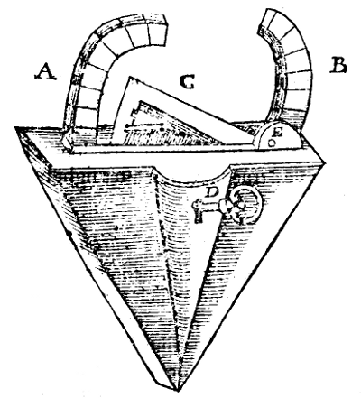
que haya luego una llave ajustada para abrirlo, como aparece en B. Y por último, que los arcos tengan diversas muescas limadas, así el lugar de la división cuando el candado esté cerrado del todo será menos sospechado. Con esta figura y direcciones podéis proveeros de tal candado si lo deseáis.
Podéis hacer que alguno sostenga un tester de canto entre los dientes: tomad también otro tester y con la izquierda ofrecédselo de canto entre los dientes de un segundo, fingiendo que vuestra intención es convertir ambos en la boca que deseen, y eso por virtud de vuestras palabras y circunstancias que apenas lo intente cuando, sosteniendo secretamente el candado en la derecha con el índice sobre la pata C, podéis deslizarlo al instante sobre el lado izquierdo de su mejilla y cerrarlo simplemente, lo cual podéis hacer presionando un poco el dicho dedo tras muchas súplicas: tras colgar el candado un rato, sacad la llave por algún artificio (como por un confederado o persona descuidada) y abridlo, mas cerradlo al instante doblemente, pues parecerá candado verdadero y no será sospechado de otro.
Esta hazaña no puede ejecutarse en todo tiempo, sino sólo en invierno y cuando haya nieve, y quien la muestre debe tener preparado un puñado de sal. Llegado el tiempo y preparado, que pida un taburete, un cuartillo, un puñado de nieve, un poco de agua y un palo corto; primero eche un poco de agua sobre la tapa del taburete y ponga encima el cuartillo y meta la nieve en él y la sal secretamente, luego sostenga el cuartillo fuerte con la izquierda y tome el palo corto en la derecha y con él remueva la nieve y sal en el cuartillo como quien bate manteca, y en menos de un cuarto de hora el cuartillo helará tan fuerte al taburete que apenas podréis arrancarlo con ambas manos: hay razón natural para esto, que el docto no necesita que se le diga y al escamoteador común no quisiera que lo supiera, por eso lo omito.
El ejecutar este truco consiste en enrollar la estopa. Después de hacer un rollo preparado, pedid una pipa de tabaco, encendedla y dad dos chupadas, podéis taparla con un extremo del rollo de estopa, reteniendo secretamente en la mano: luego dad la pipa a otro y escamotead la estopa en la boca: luego soplad suavemente y saldrá humo y fuego de la boca, lo cual podéis continuar cuanto queráis metiendo más estopa según se consuma.
Proveeos de diversas cintas, unas negras, unas azules, unas verdes, unas amarillas: medidlas y al fin de cada vara haced un nudo corredizo, luego enrollad cada color en bola separada y disponedlas alrededor para saber al instante cuál tomar. Cuando os pidan tantas varas de tal color, escamotead una bola del mismo en la boca y sacadla, recordando cuántos nudos han pasado por los dientes, luego cortadla y entregadla.
Esta hazaña debe ejecutarse con tres campanillas, debéis meter una en la manga izquierda, luego poned una campanilla en una mano y otra en la otra (deben ser pequeñas campanillas de morris) retirad las manos y escamotead secretamente la campanilla de la izquierda a la derecha: luego extended ambas manos y pedid a dos que os sostengan las manos fuerte, mas primero agitad las manos y decid: ¿las oís? La campanilla de la manga no se distinguirá por el sonido de la que está en la mano: luego decid: ahora el que sea el más gran putero o cornudo de vosotros dos tendrá ambas campanillas y el otro ninguna: abrid entonces las manos y mostradlas, y se pensará que tratáis con arte mágica.
Proveeos de un libro de papel en octavo del grosor que queráis; primero volved siete hojas y luego en ambas caras abiertas dibujad o pintad flores, luego volved siete hojas más y pintad las mismas; haced así hasta volver el libro entero: luego a las hojas pintadas más lejanas pegad un poco de papel o pergamino uno directamente sobre otro: luego volved el libro de nuevo y tras cada sexta hoja pintad flores de lis, y pegadles tiras de pergamino como a las primeras; mas estas tiras deben ser todas un poco más bajas que las anteriores. Luego volved el libro otra vez y tras la quinta hoja pintad cuernos por todo el libro, sólo dejad una parte de las hojas en blanco: acabado así el libro, al usarlo sostenedlo en la izquierda y con la derecha, pulgar sobre las tiras de pergamino, mostradlas ordenada y ágilmente mas con rostro audaz y atrevido, pues esa debe ser la gracia de todos vuestros trucos: decid: este libro no está pintado así como algunos podéis suponer, sino que es de tal propiedad que quien sople en él dará representación de aquello a que naturalmente es aficionado, y luego volved el libro y decid: ved que todo es papel blanco.
Debéis tener una figura de hombre de madera del tamaño de vuestro dedo meñique, como aparece en la figura señalada C D, cuya cabeza señalada con A debe poder quitarse y ponerse a voluntad por medio de un alambre en el cuello marcado con B: también debéis tener un gorro de tela con un pequeño agujero en la corona como F: este gorro debe tener una bolsita dentro para meter la cabeza. La bolsita debe estar bien hecha para no descubrirse fácilmente; mostrad vuestro hombre a la compañía diciendo: ved aquí, señores, a esto lo llamo mi Bonus Genius, luego mostrad su gorro diciendo: y éste es su jubón, decid además: miradlo ahora tan fijamente como podáis, no obstante os engañaré, pues para eso he venido.
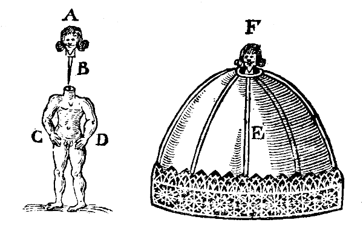
Luego sostened el gorro sobre el rostro y tomad vuestro hombre en la derecha y meted su cabeza por el agujero del gorro como veis en F, diciendo: ahora está listo para ir de cualquier mensaje que le envíe; a España, Italia o donde quiera: mas debe tener algo para los gastos, con eso sacad la derecha de bajo el gorro y con ella el cuerpo (mas secretamente) metiendo la derecha en el bolsillo como buscando dinero, donde debéis dejar el cuerpo y sacar la mano y decid: ahí van tres escudos: Ahora vete pues, girad la cabeza y decid: mas mirará alrededor antes de irse. Luego decid (poniendo el índice en su corona): justo cuando baje mi dedo así desaparecerá, y con eso con ayuda de la izquierda que está bajo el gorro escamotead su cabeza en la bolsita dentro del gorro: luego volved el gorro y decid: ved aquí que se fue: luego tomad el gorro y sostenedlo arriba de nuevo sacando la cabeza de la bolsita y decid: hei genius meus velocissimus, ubi, y silbad. Luego meted la cabeza por el agujero del gorro y sosteniendo la cabeza por el alambre giradla; luego al instante meted cabeza y gorro en el bolsillo.
Haced una caja de madera, estaño o latón: que el fondo caiga un cuarto de pulgada dentro de la caja y pegad en él una capa de cebada o grano semejante: sacad la caja con el fondo hacia abajo y decid: Señores, encontré a un campesino que iba a comprar cebada y le dije que le vendería una ganga, también multiplicaría un grano en cuantos fanegas necesitara, luego echad un grano de cebada en la caja y cubridla con un sombrero y al cubrirla volved el fondo arriba: luego haced que alguno sople sobre el sombrero, luego destapadla y se maravillarán de ello. Podéis hacer otra caja de madera como una campana que contenga justo lo que la anterior y hacedle fondo de suela que se empuje dentro del fondo de la campana: luego llenadla de cebada y empujad el fondo de cuero, pues impedirá que caiga la cebada; sacad esta caja del bolsillo y ponedla suavemente sobre la mesa y decid: Ahora haré que toda la cebada pase de mi medida a mi campana, luego cubrid con un sombrero la caja que tiene la cebada pegada y al cubrirla volvedla con la cebada hacia abajo: luego decid: primero veamos si hay algo bajo la campana y golpeadla fuerte sobre la mesa, así el peso de la cebada empujará el fondo abajo; luego mandad a alguno soplar fuerte sobre el sombrero, luego quitadlo donde verán nada sino una medida vacía, luego levantad la campana y toda la cebada saldrá. Barrredla luego al instante en el sombrero o regazo no sea que su curiosa mirada descubra vuestro fondo de cuero.
Tomad un vaso bajo, llenadlo razonablemente de cerveza y tomad un seis peniques y ponedlo sobre la mesa y poned el vaso de cerveza sobre él y mojando el dedo en la cerveza decid: ¿está el seis peniques dentro o bajo el vaso? Alguno dirá quizá que está debajo: luego decid: veamos, y tomad a la vez seis peniques y vaso (sostened el vaso de modo que ambas manos lo oculten del todo) y dejad caer el vaso derecho en el regazo, luego haced como si lo arrojaseis lejos mirando arriba tras él. Luego pareced sonaros la nariz y dejad caer el seis peniques sobre la mesa diciendo: me alegro de haber recuperado mi dinero: mas ahora (decid) ¿qué ha sido del vaso? Luego pareced sacarlo del bolsillo diciendo: soy buen compañero y no quisiera perder mi bebida, luego bebedla. Es truco excelente si se ejecuta ágil y limpiamente. Aunque derraméis parte de la cerveza no importa, ni es descrédito, además podéis disimularlo muy bien.
Debéis tener una mesa con dos buenos agujeros anchos hacia un extremo, también un paño a propósito para cubrir la mesa de modo que cuelgue hasta el suelo alrededor; también este paño debe tener dos agujeros a la altura de los de la mesa, debéis tener también una fuente de madera a propósito con agujero en el fondo que ajuste también a los agujeros de la mesa, y debe, como la mesa, dividirse en dos piezas: teniendo estas preparadas debéis tener dos muchachos; uno debe yacer a lo largo sobre la mesa boca abajo y meter la cabeza por un agujero de la mesa, paño y todo; el otro debe sentarse bajo la mesa y meter la cabeza por el otro agujero, luego poned la fuente alrededor de su cuello para hacer la vista más espantosa, podéis formar algo alrededor de sus cuellos haciendo pequeños agujeros como venas y untarlo con sangre de oveja, poniendo también sangre y trocitos de hígado en la fuente y poned un brasero de carbones delante de la cabeza, esparciendo azufre sobre los carbones; pues esto hará la cabeza parecer tan pálida y demacrada como si en verdad estuviera separada del cuerpo.
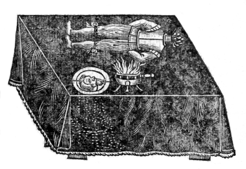
La cabeza puede dar uno o dos jadeos y será mejor. Que nadie esté presente mientras hacéis esto ni cuando deis entrada permitáis que toquen ni que se queden mucho.
Debéis tener una bola de madera y en una mitad o lado de ella debe estar artíficamente tallado el rostro de un niño: en la parte trasera de este rostro debe haber un agujero no muy hondo; este agujero debe llenarse de plomo para que (al echar la bola al agua) mantenga el rostro arriba: luego pintadlo vivamente con colores al óleo y está hecho. Notad que no debe ser mayor que una pelota de tenis. Pedid un cuartillo de vino lleno de agua limpia hasta el cuello, teniendo el rostro preparado oculto en la derecha, tomad el cuartillo en la izquierda y ponedlo sobre la mesa y decid: veis, señores, no hay nada en el cuartillo sino agua, con eso golpead la tapa del cuartillo con la derecha y al golpearla deslizad el rostro en el cuartillo, lo cual podéis hacer sin sospecha. Luego haced que todos se aparten y si quieren que os miren estrechamente: con eso meted la mano en el bolsillo y pareced sacar un puñado de polvo y esparcirlo sobre el cuartillo diciendo: Surge celeriter, por el polvo de experiencia, surge, luego mandadles mirar qué hay allí. Del mismo modo podéis hacer aparecer un sapo, lo cual causará no poca admiración.
Debéis tener un tonel doble, es decir, dos toneles soldados uno dentro del otro de modo que por el extremo estrecho podáis verter cantidad de vino, agua o cualquier licor. Este tonel debéis tenerlo lleno de antemano del licor que queráis: pedid del mismo tipo: luego sacad vuestro tonel y poniendo el dedo medio en el fondo mandad a alguno o hacedlo vos mismo llenarlo y bebedlo delante de ellos y volved el extremo ancho hacia abajo diciendo: Señores, todo se fue, y en un tris volveos y al volver pronunciad términos de arte, retirad el dedo del extremo estrecho y dejad salir todo el licor que estaba entre los toneles, y se pensará que es el mismo que bebisteis del tonel y así podéis persuadirles que es el mismo.
Debéis tener preparado un diente grande como diente de cerdo, ternera o caballo; éste debéis retenerlo secretamente en la derecha y con la misma mano sacad del bolsillo una bolita de corcho y habiendo usado retórica para persuadirles que es de excelente propiedad, inclinad la cabeza y con ello tocad uno de vuestros dientes más lejanos e inmediatamente dejad caer el diente retenido en la mano diciendo: y ésta es la moda de los charlatanes, toca y toma.
Tomad la bola en una mano y el diente en la otra y extended las manos lo más lejos posible una de otra, y si alguno quiere apostar un cuartillo de vino con él de que no retiraréis las manos y haréis que ambos vengan a la mano que él elija: no es más que dejar uno sobre la mesa y volveros y tomarlo con la otra mano y habréis ganado la apuesta y moverá no poca risa ver a un necio perder así su dinero.
Proveeos de un buen bastón grueso de unas dos varas, tres partes del cual deben ser huecas como cuchara de salsa, la cuarta parte servirá de mango. En el extremo de la cuchara debe hacerse un agujero y meter un alfiler ancho del largo de un huevo y está hecho. Apoyad el mango de este bastón contra el muslo derecho y sostenedlo con la derecha cerca del comienzo de la cuchara; poned entonces un huevo en la cuchara del bastón y volveos, sosteniendo el bastón ora arriba ora abajo con el lado cuchara siempre arriba, así el huevo rodará de un extremo al otro de la cuchara sin caer. Del mismo modo podéis hacer que dos o tres huevos bailen uno tras otro con poca práctica.
Entregad una moneda con la izquierda a uno y a un segundo otra, y ofreced una tercera a otro, pues al ver que los otros reciben dinero no la rehusará fácilmente: cuando ofrezca tomarla podéis golpearle los dedos con un cuchillo o algo sostenido en la derecha diciendo que sabíais por virtud de vuestro bonus genius que pensaba quedársela.
Haced un nudo suelto simple con los dos extremos de esquina de un pañuelo y pareciendo tirar muy fuerte sostened fuerte el cuerpo del pañuelo (cerca del nudo) con la derecha tirando del extremo contrario con la izquierda, que es la esquina que sostenéis. Luego cerrad hábilmente el nudo que aún estará algo suelto y tirad del pañuelo así con la derecha de modo que el extremo de la izquierda esté cerca del nudo: entonces parecerá nudo verdadero y firme. Y para hacerlo parecer más seguro dejad que un extraño tire del extremo que sostenéis en la izquierda mientras sostenéis el otro en la derecha; luego sosteniendo el nudo con índice y pulgar y la parte inferior del pañuelo con los otros dedos como quien sostiene una brida cuando quiere con una mano aflojar el nudo y alargar las riendas. Hecho esto volved el pañuelo sobre el nudo con la izquierda, al hacerlo debéis súbitamente sacar el extremo o esquina poniendo arriba el nudo del pañuelo con índice y pulgar como pondríais el nudo de la brida. Luego entregadlo (cubierto y envuelto en medio del pañuelo) a uno para que lo sostenga fuerte y tras pronunciar palabras de arte y apuestas puestas tomad el pañuelo y agitadlo y estará suelto.
Tomad dos cordeles finos de dos pies cada uno, doblados igualmente de modo que aparezcan cuatro extremos. Luego tomad tres cuentas grandes, el agujero de una mayor que las otras; poned una cuenta en el ojo o doblez de un cordel y otra en el otro: luego tomad la cuenta de agujero mayor y esconded ambos dobleces en ella: lo cual puede hacerse mejor si metéis el ojo de uno en el ojo del otro. Luego pasad la cuenta media sobre la misma doblada sobre su compañera y así parecerán puestas sobre los dos cordeles sin división, pues sosteniendo fuerte en cada mano los dos extremos de los dos cordeles podéis agitarlos como queráis y hacer parecer manifiesto a los miradores que no ven cómo lo hicisteis que las cuentas están puestas en el cordel sin fraude: luego debéis parecer atar más efectivamente esas cuentas al cordel y haced medio nudo con uno de los extremos de cada lado, que no es para otro propósito sino que al quitar las cuentas los cordeles se vean en la posición que los miradores suponen que estaban antes. Pues cuando hayáis hecho vuestro medio nudo (que en modo alguno debéis doblar para hacer nudo perfecto) debéis entregar esos dos cordeles a algún espectador, a saber, dos extremos igualados en una mano y dos en la otra, y luego con apuesta y términos de arte comenzad a sacar vuestras cuentas, lo cual si manejáis ágilmente y al fin hacéis que él tire de sus dos extremos los dos cordeles se verán colocados claramente y las cuentas haber pasado por los cordeles.
Tomad dos hilos o cordones pequeños de un pie cada uno: enrollad uno redondo que será entonces del tamaño de un guisante, guardadlo entre el índice izquierdo y el pulgar. Luego tomad el otro hilo y sostenedlo extendido entre índice y pulgar de cada mano sosteniendo todos los dedos delicadamente como enseñan a las damas a tomar un bocado de carne. Luego que uno lo corte por medio; hecho esto poned las yemas de los dos pulgares juntas y así podréis con menos sospecha recibir el trozo de hilo que sostenéis en la derecha a la izquierda sin abrir índice y pulgar izquierdos, luego sosteniendo esos dos trozos como sosteníais el mismo antes de cortarlo dejad que los corten también por medio y escamoteadlos como antes hasta que sean muy cortos y luego enrollad todos esos extremos juntos y guardad esa bola de hilos cortos delante de la otra en la izquierda y con un cuchillo empujadla hacia una vela donde podéis sostenerla hasta que la bola de hilos cortos se queme en cenizas. Luego retirad el cuchillo con la derecha y dejad las cenizas con la otra bola entre índice y pulgar de la izquierda y con los dos pulgares y dos índices juntos pareciendo tomar trabajo en frotar las cenizas hasta renovar el hilo y extended el hilo que guardasteis todo el tiempo entre índice y pulgar. Si tenéis ligereza para cambiar esa bola de hilo de lugar entre los dedos (como fácilmente puede hacerse) entonces parecerá muy extraño.
Proveeos de un trozo de la cinta que pensáis cortar o al menos un patrón igual de una pulgada y media de largo y doblado secretamente en la izquierda entre algunos dedos cerca de las puntas tomad la otra cinta que pensáis cortar que podéis colgar al cuello de uno y bajad la dicha izquierda al doblez de ella: y poniendo vuestro trozo un poco delante del otro (cuyo extremo o más bien medio debéis ocultar entre índice y pulgar) haciendo el ojo o doblez visible de vuestro patrón dejad que algún espectador lo corte por medio y seguramente se pensará que la otra cinta está cortada; la cual con palabras y frotándola pareceréis renovar y hacer entera de nuevo. Esto si se maneja bien parecerá milagroso.
Debéis tener una caja de latón o plata de Crooked Lane, caja doble y no más de cinco cuartos de pulgada de hondo: en medio debe estar el fondo y ambos extremos deben tener tapas que los cubran. Esta caja puede hacerse tan primorosamente que cada tapa tenga un pequeño pestillo artificiosamente ideado (que aunque yo pudiera hacer no puedo describir ni con palabras ni figuras) por el cual las tapas de la caja puedan cerrarse fuerte de modo que nadie sino el maestro escamoteador sepa abrirlas presto. En un extremo de esta caja tened siempre preparada una semejanza de plata fundida que podéis hacer fácilmente mezclando igual cantidad de estaño en polvo y azogue, así: primero poned vuestro estaño en polvo en un crisol o pote de fundir de orfebre, fundidlo y luego quitadlo del fuego y echad el azogue y removed bien ambos y está hecho. Ahora con un extremo de la caja preparado así pedid prestada una moneda a alguno de la compañía mandándole que la marque como quiera para conocerla de nuevo, luego ponedla en el otro extremo de la caja en cuyo fondo podéis tener un poco de cera para que no suene. Así podéis parecer por virtud de palabras fundir su dinero y después darle de nuevo entero como lo recibisteis.
Debéis hacer un vaso de tamaño mediano en forma de tonel con dos tabiques, así habrá tres partes separadas: A B significa la primera, C D la segunda y E F la tercera, sobre la tapa de este tonel debe clavarse fuerte un trozo de madera torneada redonda como G H, en cuyo centro debe erguirse un eje cuya punta debe ser tornillo, en esta madera deben hacerse también tres agujeros hacia la circunferencia, cada agujero con un tubo metido que se extienda uno a cada vaso, como veis en la figura. I K significa el primer tubo que llega a la primera parte A B, L M el segundo tubo que se extiende a la segunda parte C D, N O el tercer tubo que se extiende a la tercera parte E F, cada parte debe tener también su respiradero o no podréis ni llenarla ni vaciarla, éstos están marcados con las letras P Q R, sobre la tapa de la dicha madera debe fijarse un trozo de cuero licorado con tres agujeros correspondientes a los de la madera, luego sobre la madera debe atornillarse otro pico para llenar cada vaso con licor separado, V los picos S T una placa de latón a la que está soldado el pico, W el tornillo que atornilla este pico sobre el eje en la madera torneada G H.
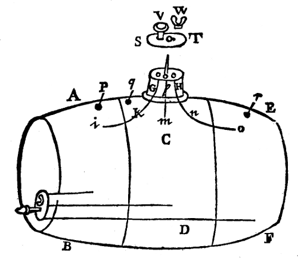
Por último cada vaso debe tener su tubo por donde sacar el licor contenido que veis en la figura, y debe atornillarse sobre ellos otra placa con un vaso cónico, así girándolo de un agujero a otro podéis entregar cada licor aparte cual queráis.
Tomad una cinta estrecha blanca de dos o tres varas de largo; primero mostradla a quien la quiera ver, luego atad ambos extremos juntos y tomad un lado en una mano y el otro en la otra de modo que el nudo esté hacia medio de un lado y usando palabras circunstanciales para engañar a los espectadores girad una mano hacia vosotros y la otra de vosotros, así torceréis la cinta una vez, luego juntad los extremos y luego si deslizáis índice y pulgar de cada mano entre la cinta casi como quien sostiene un ovillo de hilo para devanar hará un doblez o torsión como aparece en la primera figura donde A significa la torsión o doblez, B el nudo, luego de igual modo haced un segundo doblez sobre la línea DC como veis en la segunda figura donde B significa el nudo, C el primer doblez, A el segundo doblez. Sostened entonces índice y pulgar de la izquierda sobre el segundo doblez y también sobre el nudo y índice y pulgar de la derecha sobre el primer doblez C y pedid a algún espectador que lo corte todo con cuchillo afilado en la línea cruzada ED. Cuando esté cortado sostened firme la izquierda y dejad caer todos los extremos que sostenéis en la derecha pues habrá apariencia de ocho extremos, cuatro arriba y cuatro abajo, y así la cuerda parecerá cortada en cuatro partes como veis en la tercera figura; luego recoged los extremos que dejasteis caer en la izquierda y entregad dos de los extremos (pareciendo tomarlos al azar) a dos personas separadas mandándoles sostenerlos fuerte, sosteniendo aún los dedos izquierdos sobre los dobleces o torsiones:
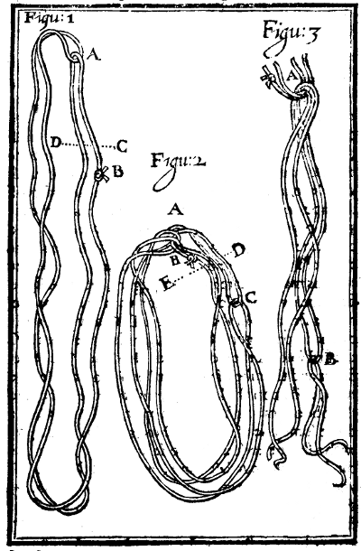
luego con derecha e izquierda pareced revolver y mezclar todos los extremos que teníais en la izquierda, sacad todos los trozos o piezas que son tres como veis en A y B en la tercera figura; torcedlos todos digo en una bolita y ocultadla entre algunos dedos de la izquierda y desmenuzad otro montón confuso: y tras algunas palabras dichas con la derecha entregad este montón confuso a uno de la compañía mandándole sostenerlo fuerte diciendo: Hulla passa quicke couragious fiat coniunctio: Luego mandadles mirarlo, quienes mientras miran ávidamente el resultado podéis con facilidad meter la bola o rollo de extremos en el bolsillo, así se pensará que la habéis hecho entera por virtud de vuestras palabras. Truco excelente si se maneja con gracia y truco que me costó más trabajo hallar que todos los demás; éste lo he ido a observar a propósito mas volví tan sabio como fui.
Esta hazaña debe ejecutarse con un espejo hecho a propósito cuya figura he descrito plenamente con el modo de hacerlo que es así: Primero haced un aro o filete de madera, cuerno o semejante del ancho de media corona en la circunferencia; el grosor de este aro o filete sea un cuarto de pulgada. En medio de este aro fijad un fondo de madera o latón y taladrad en orden decente diversos agujeros pequeños del tamaño de guisantes pequeños o alfitas, luego sobre un lado de este fondo meted un cristal y fijadlo en el aro cerca del fondo; luego tomad cantidad de azogue y preparadlo así: Tomad digo una onza o dos de azogue y echadle un poco de sal y removed bien juntos, luego echad vinagre de vino blanco y lavad o removed todo junto con una rebanada de madera, luego verted el vinagre y lavad la sal con agua limpia tibia, luego verted el agua y poned el azogue en un trozo de cuero blanco y atadlo fuerte y así torcedlo o exprimidlo en una cazuela de barro y estará muy brillante y puro, luego poned tanto de este azogue preparado en el filete o aro dicho cuanto cubra el fondo; luego meted en el aro otro cristal ajustado y cementad los lados para que no salga el azogue y está hecho. La figura que aquí pongo debajo; A representa el lado que da forma de un rostro a los miradores B el otro lado que multiplica el rostro del mirador tantas veces como agujeros haya en el fondo medio, el uso no insistiré pues quien esté versado en las hazañas anteriores concebirá mejor por sí mismo usarlo que mis palabras pueden dirigirle o ayudarle.
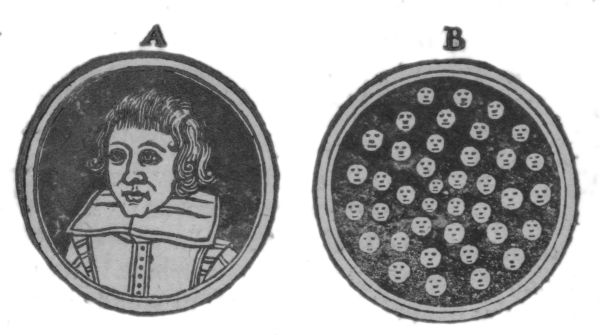
Hay muchos trucos capaces de engañar al simple, como sacar harina, pimienta, jengibre o cualquier polvo por la boca tras comer pan, lo cual se hace reteniendo cualquiera de estas cosas metidas en papelito o vejiga escamoteada en la boca y moliéndola con los dientes. Ítem, un junco por un trozo de tabla con tres agujeros y de un lado el junco apareciendo en el segundo, del otro lado en el tercero por razón de un hueco hecho entre ambos, así el engaño consiste en volver el trozo de tabla.
El mejor lugar para disponer de una moneda es la palma de la mano y la mejor moneda para escamoteo es un tester, mas con práctica todas serán iguales.
Tomad un groat o moneda menor y lijadla muy fina por un lado y tomad dos fichas y lijadlas, una por un lado la otra por el otro; pegad el lado liso del groat al lado liso de una de las fichas uniéndolas tan cerca como sea posible especialmente en los bordes que pueden limarse de modo que parezcan una sola pieza; a saber, un lado ficha el otro groat. Luego tomad un poco de cera verde y ponedla sobre el lado liso de la otra ficha de modo que no descolore mucho el groat; y así esa ficha con el groat se pegará junta como si estuviera pegada y limada pareja con el groat y la otra ficha parecerá tan perfecta ficha entera que aunque un extraño la maneje no la descubrirá; luego habiendo tocado un poco índice y pulgar de la derecha con cera blanda tomad con ello esta ficha falsificada y ponedla abiertamente sobre la palma de la izquierda como pone un contador sus fichas, apretándola fuerte de modo que dejéis la ficha pegada con el groat aparente en la palma izquierda y el lado liso de la ficha encerada se pegará fuerte al pulgar por la cera con que está untada y así podéis ocultarla a vuestro placer siempre que pongáis el lado encerado abajo y el pegado arriba: luego cerrad la mano y al cerrarla o después volved la pieza y así en vez de ficha (que suponen está en la mano) pareceréis tener un groat para admiración de los miradores si se maneja bien.
Poned un poco de cera roja (mas no demasiado fina) sobre la uña del dedo más largo y que un extraño ponga un twopeny en la palma de vuestra mano y cerrad el puño súbitamente y escamotead el twopeny sobre la cera lo cual con uso podréis hacer tan bien que nadie lo perciba. Luego decid: Ailif, casil, zaze, hit, mel y súbitamente abrid la mano sosteniendo las puntas de los dedos más bajas que altas que la palma y los miradores se maravillarán dónde se ha metido. Luego cerrad la mano súbitamente de nuevo y apostad si está allí o no; y podéis dejarlo allí o quitárselo a vuestro placer.
Tomad una hoja de papel y doblarla de modo que un lado sea un poco más largo que el otro: luego poned una ficha entre las dos hojas del papel hasta medio de la parte superior del doblez sosteniéndolo de modo que no se vea y poned un groat fuera de ello justo contra la ficha y doblarlo hasta el extremo del lado más largo: y cuando lo despleguéis de nuevo el groat estará donde estaba la ficha y la ficha donde el groat; así algunos supondrán que habéis cambiado el dinero en ficha y con esto pueden hacerse muchas hazañas.
Primero debéis sostener abierta la mano derecha y poner en ella un tester o moneda grande, luego poned encima la punta del dedo largo izquierdo y usad palabras de arte y súbitamente deslizad la derecha del dedo con que sosteníais el tester y doblando un poco la mano retendréis aún el tester en ella y súbitamente pasando la derecha por la izquierda pareceréis haber dejado allí el tester especialmente al cerrar a tiempo la izquierda. Lo cual para que parezca más verdaderamente hecho podéis tomar un cuchillo y parecer golpear contra él de modo que suene fuerte: mas en vez de golpear la pieza en la izquierda (donde no hay) sostened la punta del cuchillo fuerte con la izquierda y golpead contra el tester sostenido en la otra mano y se pensará que golpea contra el dinero en la izquierda. Luego tras algunas palabras de arte pronunciadas abrid la mano y al no verse nada se maravillarán cómo se quitó el tester.
Debéis tener un pañuelo con una ficha cosida primorosamente en una esquina: sacadlo del bolsillo y pedid prestado un tester a alguno y pareced envolverlo en medio del pañuelo mas retenedlo en la mano y en vez de eso envolvedereis la esquina que tiene la ficha cosida en medio y luego mandadles sentir si está allí lo cual imaginarán no ser otro que el tester que os prestaron. Luego mandadles ponerlo bajo un sombrero sobre la mesa y pedid un barreño de agua sostenedlo bajo la mesa y golpead diciendo: Vade, ven presto, y luego dejad caer el seis peniques de la mano en el agua. Luego quitad el sombrero y tomad el pañuelo y agitadlo diciendo: ya se fue, luego mostradles el dinero en el barreño de agua.
Tomad un seis peniques soplad en él y metedlo presto en la mano de algún espectador mandándole sostenerlo fuerte: luego preguntadle si está seguro de tenerlo, luego para estar cierto abrirá la mano y mirará. Luego decidle: no, mas si dejáis escapar mi aliento no puedo hacerlo. Luego tomadlo de su mano de nuevo y soplad en él y mirándole a la cara meted un trozo de cuerno en su mano y retened el seis peniques cerrando vos mismo su mano. Mandadle bajar la mano y deslizad el tester entre uno de sus puños. Luego tomad la piedra con que mostráis hazañas y sostenedla contra su mano diciendo: Por virtud de ésta mando que desaparezca el dinero que sostenéis en la mano, vade, ahora ved: cuando hayan mirado pensarán que se cambió por virtud de vuestra piedra. Luego tomad el cuerno de nuevo y pareced arrojarlo lejos reteniendo lo y decid: vade, y luego: ya tengo mi dinero de nuevo: Él entonces se maravillará y dirá: Yo no lo tengo, decidle de nuevo: Sí lo tenéis y estoy seguro: ¿No está en vuestras manos? Si no está allí bajad una manga pues está en una seguro, donde al hallarlo no poco se maravillará.
Entregad en la mano de un hombre dos testers iguales en vez de uno cerrando al instante su mano: luego tomad otro tester y tened preparado un trozo de cuerno cortado igual con él. Meted dicho tester en su mano derecha con el cuerno debajo quedando las puntas de los dos dedos medios rígidas sobre el tester; así doblando un poco su mano hacia abajo sacad los dedos hacia vosotros y sacarán el tester de su mano y cerrad su mano presto quien al sentir el trozo de cuerno imaginará que es el tester: luego decid: el que sea el más gran putero o cornudo de vosotros tendrá ambos testers en su mano y el otro ninguno. Esto puede hacerse también sin trozo de cuerno apretando un tester en la palma de la mano y quitándolo con el pulgar encerado; pues el apretar fuerte el dinero en la mano hará creer al sujeto que lo tiene cuando no lo tiene.
Hay multitud de hazañas deleitosas que pueden ejecutarse por ordenada colocación, barajar y cortar de cartas usuales. También número de otras hazañas extrañas pueden mostrarse con cartas y dados hechos a propósito. Las cartas pueden hacerse mitad de una impresión y mitad de otra; así sosteniéndolas de diversos modos pueden presentarse diversas cosas contrarias unas a otras. Por ejemplo con cuatro cartas iguales hechas a propósito y sosteniéndolas convenientemente presentaréis ocho cosas diferentes. Ahora para los dados el arte está en forjarlos y retener o tirar ágilmente dos entre tres o uno con dos: deben digo forjarse más pesados hacia un lado que el otro de modo que el peso de un lado tire del otro. Otros pueden hacerse más planos provistos de semejante. Y habiendo aprendido a retenerlos hábil y prestamente podréis mandar el juego y saber de antemano cuál será vuestra tirada y así apostar sobre ella también. Además para las cartas hay diversos otros trucos de que los fulleros hacen práctica continua como marcarlas, doblar una esquina, señalarlas con puntitos, colocar espejos detrás de los jugadores y en anillos a propósito, zapatos mudos de algunos espectadores. Mas no insistiré en descubrir éstos pues en esta nuestra edad fullera hay demasiados tan expertos que se mantienen mejor que muchos hombres honrados con oficio lícito. Sólo tomad esto de paso: Quienes tengan dinero en la bolsa cuídense de jugar a cartas y dados no sea que deseen tenerlo cuando sea tarde. Por mi parte nunca jugaré por lo que ya tengo seguro: si alguno quiere jugar conmigo en otros términos estoy seguro de no perder nada en el trato.
Algunos han dicho que no escribí suficientemente de esta parte en la edición anterior; más bien pienso que la causa fue que pensaron tener demasiado poco por su dinero. No obstante para dar a cada uno el contenido deseado entregaré mi parecer más plenamente aquí y quizá lo que más deseo aprendan a evitar la compañía de fulleros vagabundos, digo los que frecuentan los caminos y pueblos principales y lugares de reunión cerca; pues son del mismo modo aunque para peor fin. Primero pues por esta palabra confederación se entiende una especie de combinación o acuerdo entre diversas personas para el logro de un mismo negocio: entendedme bien, todos éstos conociéndose muy bien unos a otros (al menos el designio como aparece por su acuerdo) se extrañan como si nunca se hubieran visto antes. Y para que puedan ejecutar su designio sin dar la menor sospecha a ningún mirador os daré un ejemplo o dos por los cuales os daré suficiente información para concebir más prestamente cada particular de esta naturaleza cuando y dondequiera los veáis ejecutados.
El escamoteador pide una moneda a alguno de la compañía como un tester o chelín mandándole marcarla como quiera, luego la toma y la arroja lejos y va a su confederado (que está provisto de antemano de moneda igual marcada con la misma marca) y le manda entregar el dinero de su bolsillo, bolsa o si dice la palabra de su boca; pues esto se concierta de antemano. Ahora este confederado para hacer la cosa parecer más extraña comenzará a refunfuñar y enojarse preguntando cómo la tuvo él hasta hallar la marca confesará que no es suya maravillándose de su habilidad para enviarla allí: y todos los demás quedarán admirados de su extraordinaria maña.
El escamoteador saca una ficha del bolsillo y dice a la compañía: Aquí una ficha, tomadla quien quiera y dejadles voltearla y yo por mi maña diré si está arriba cruz o pila por el mismo sonido pues os vendaré los ojos. Ahora hay tres, cuatro o más confederados en el lugar que pareciendo extraños como los demás serán muy importunos para voltearla y antes que uno de éstos la tenga quien por alguna seña de dedos o rostro (conocida de antemano por el escamoteador) le da información después que se le pregunte. De la misma naturaleza es ese truco mencionado antes en el libro llamado La decolación de Juan Bautista.
Hacer bailar desnudo a uno es truco de la misma naturaleza pues el sujeto de antemano está de acuerdo en hacerlo y también el modo y circunstancias: así el escamoteador para cegar al pueblo pronuncia diversas palabras a tal persona, éste entonces comienza a delirar como loco y se quita la ropa con cierta violenta despreocupación aunque Dios sabe el sujeto sabe tan bien lo que hace como vos que lo leéis.
Del mismo modo sabréis qué dinero tiene otro en la bolsa y arrojando dinero a un estanque y hallándolo bajo una piedra o umbral en otro lugar. También hacer que una moneda salte de una copa y corra a otra por medio de un pelo fino atado a la moneda que el confederado guía, con multitud de tales hazañas extrañas que pueden parecer imposibles al juicio del vulgo sin asistencia del diablo o algún familiar que nombrar no es menester ni mis ocupaciones permiten tanto ocio para hacerlo.
Esto lo vi ejecutar una o dos veces y a mi saber no más. Fue un mozo robusto que lo hizo con un paño echado sobre la cabeza que le llegaba a los pies, todo para engañar al pueblo pues fingía que el sonido salía de su vientre; tenía voz fuerte y plena y había practicado mucho y otro hombre de igual hechura puede hacer fácilmente tanto. Para las narices las tapaba con índice y pulgar y cerraba la otra parte de la mano sobre la boca como le vi una vez descubierto. Otro hombre vi al mismo tiempo comer media docena de carbones vivos mas esto no debe intentarlo cualquiera: pues algunos no pueden comer su carne muy caliente; otros hay que no pueden con carne sino hirviendo caliente y son de tal disposición o más bien constitución que no dudarán tomar carne hirviendo de una olla con las manos desnudas y no sentir calor extraordinario.
He puesto aquí, amable lector, no sólo todas las hazañas usuales que yo mismo he visto o oído sino diversas otras también que estoy seguro nunca estuvieron impresas ni ejecutadas por ninguno que yo sepa salvo yo mismo, y todo para daros pleno contento: y tomad esto de mí, si lo entendéis bien no hay truco que ningún escamoteador del mundo os pueda mostrar que no podáis concebir de qué manera se ejecuta si lo hace por ligereza de mano y no por medio ilícito y detestado. Que hay tales no es dudoso que trabajan por medios ilícitos y tienen además de sus dones naturales la asistencia de algún familiar por lo cual muchas veces efectúan cosas tan milagrosas que pueden bien admirarse por quien las vea o oiga contar. Podría dar ejemplo en uno cuyo padre mientras vivió fue el mayor escamoteador de Inglaterra y usaba asistencia de familiar; vivía de oficio de calderero y usaba sus hazañas como oficio accesorio; vivía, según me informaron, siempre borracho y murió, por lo que oí, en el mismo estado. Podría aquí como he instanciado en este hombre daros su nombre y dónde vive mas porque ha dejado el mal camino y elegido el mejor, porque ha enmendado su vida y tomado oficio honrado, más me alegraré de su bien que hacerle el menor descrédito nombrándolo haber sido tal. Si alguno pregunta mi nombre sepa que no estoy obligado a decírselo. Si preguntan por qué he escrito este panfleto es para deleitaros: excúsemme por lo uno y agradecedme lo otro: y quizá si el tiempo da tanto ocio gastaré después mis ingenios en mejor sujeto.
FIN.